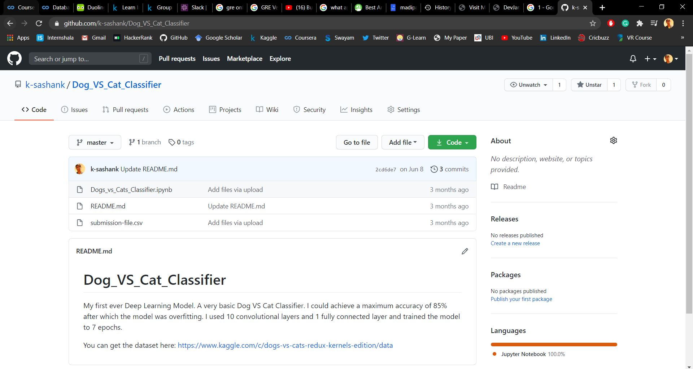

Computer Vision basics
My first ever Deep Learning Model. A very basic Dog VS Cat Classifier. I could achieve a maximum accuracy of 85% after which the model was overfitting.
I used 10 convolutional layers and 1 fully connected layer and trained the model to 7 epochs.
You can check it out here.